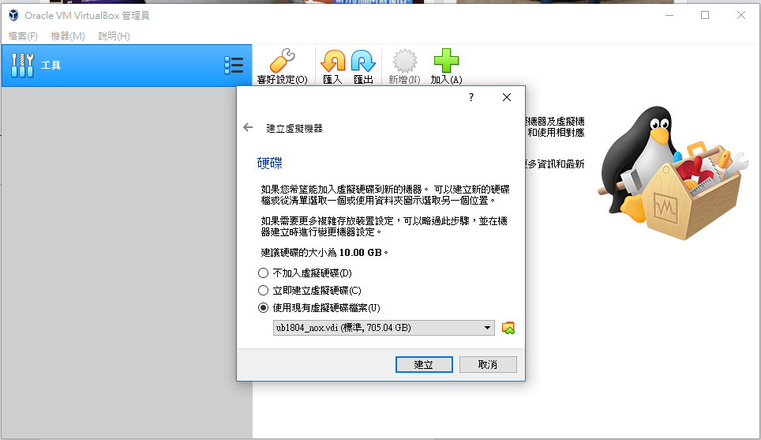
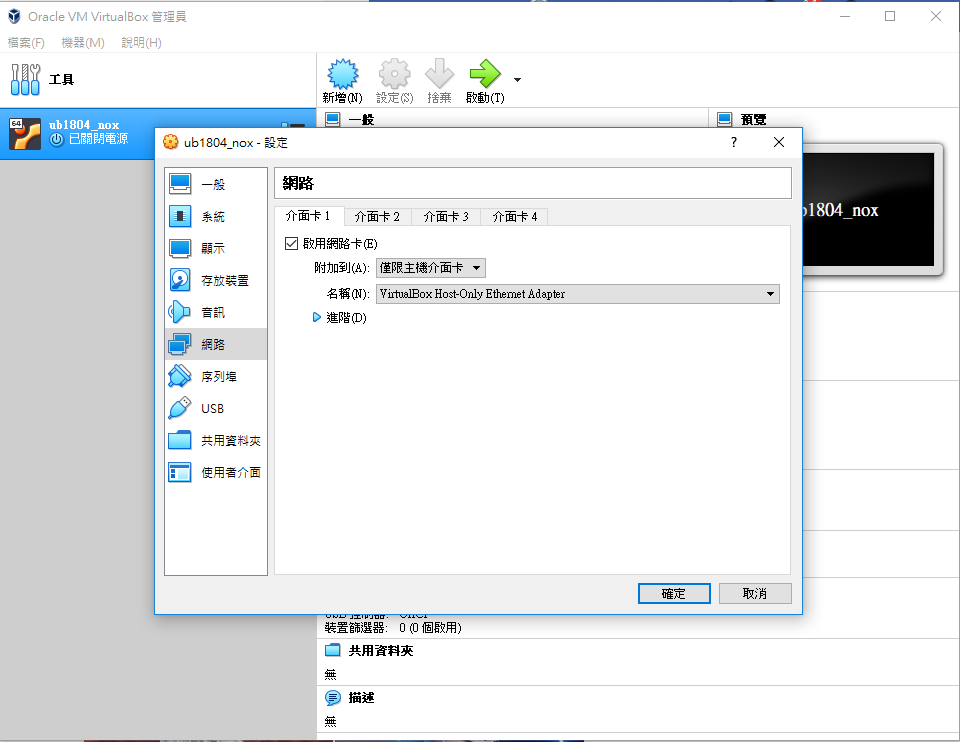
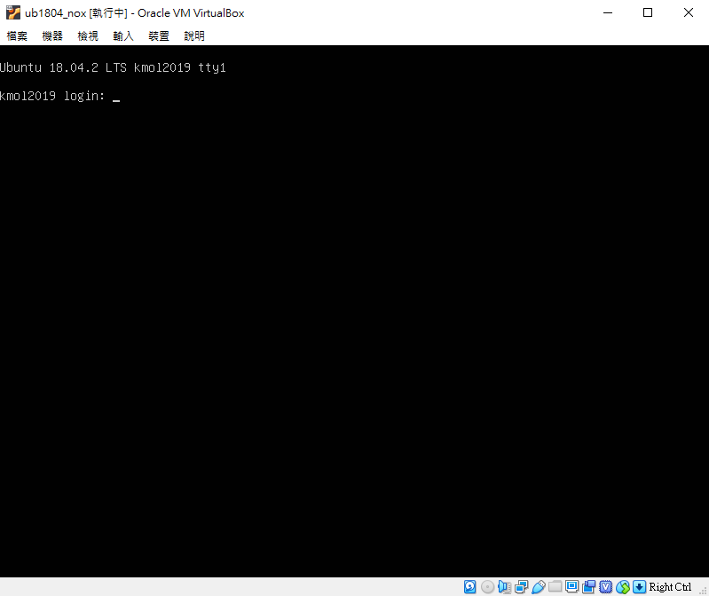

第六週
這週把網站架好了!也跟小組同步上線了，雖然程度還是趕不上，但是希望我至少不要扯後腿，能夠餐與小組討論的話是再好不過了。
製作個人網站: https://40423218.github.io/2019wcmj/content/index.html
進度嚴重落後，因為重修生，故沒有個人網站，本周將個人網站架起，並嘗試跟小組網站同步，但不知原因將網站炸開，下星期會請人示範，希望能夠跟得上大家。
感謝各位幫助。
過程:
問題(1) 遇到不知名PROXY問題

將特定檔案刪除解決。

CLONE別人的資訊改善網站。
架設好網站

同步時時遇到不知名404問題 疑似HMTL壞去


最後由同組人員修復成功並加入網站同步

下周見面時再請教，希望不再把網站炸了。
第五週 << Previous Next >> 第七週